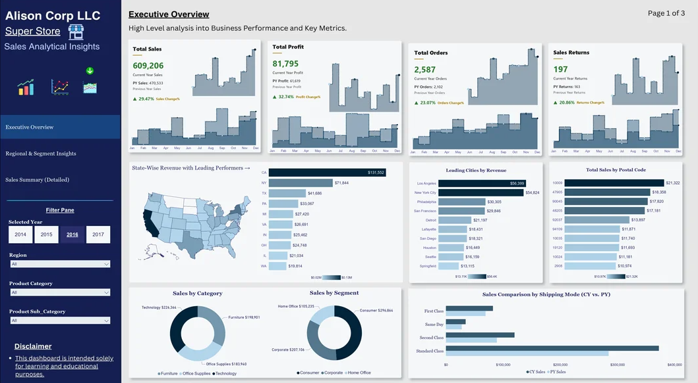
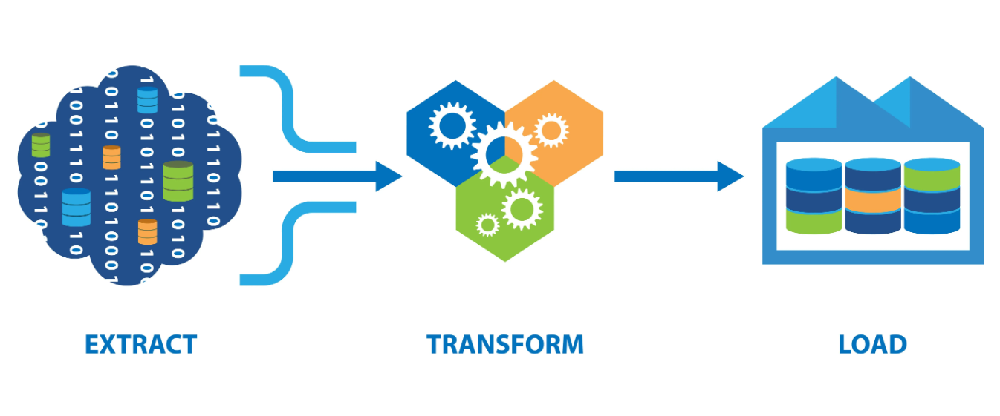
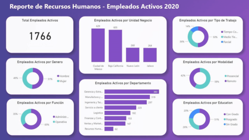

Dashboard de Ventas
Dashboard interactivo para análisis de ventas, con modelo dimensional, medidas DAX y RLS.
Ver proyectoBogotá, Colombia
Business Intelligence Developer
Construyo soluciones de Business Intelligence de principio a fin que facilitan el análisis y la toma de decisiones, desde el modelado de datos y los procesos ETL hasta dashboards interactivos en Power BI.
—— PROYECTOS
Proyectos personales enfocados en analítica de datos, modelado, visualización con Power BI y automatización de procesos.

Dashboard interactivo para análisis de ventas, con modelo dimensional, medidas DAX y RLS.
Ver proyecto
Integración y transformación de datos desde múltiples fuentes, con SSIS y arquitectura multicapa.
Ver proyecto
Dashboard para el área de RRHH con métricas de gestión de personal y análisis de rotación.
Ver proyecto
Diseño de modelo en estrella para almacenamiento de datos y generación de reportes optimizados.
Ver proyecto—— HABILIDADES
Herramientas y tecnologías que utilizo en mi día a día para crear soluciones de BI eficientes y escalables.
Dashboards · DAX · RLS · Report Builder · Power Query
Joins · CTEs · Agregaciones · Window Functions
SQL Server · PostgreSQL · SharePoint · APIs REST
Dimensional · Semántico · Star Schema · Snowflake
Limpieza · Transformación · Integración · Arquitecturas multicapa
Workspaces · Publicación · RLS · Gobierno de datos
Análisis · Pandas · NumPy · Automatización
Flujos · Automatización · Integración · Procesos
Power Query · Power Pivot · Tablas dinámicas
Diseño de dashboards · Prototipado · UI/UX
Scrum · Documentación · Control de versiones
—— EXPERIENCIA
Un recorrido por mi experiencia trabajando con datos y los principales logros de mi trayectoria profesional.
2024 — 2026
SOMOS GENTE DIGITAL
Bogotá · Remoto
2023 — 2024
NEORIS
Bogotá · Remoto
2021 — 2023
GM ROBOTIC
Ciudad de México · Remoto
2019 — 2020
RAXIONE
Ciudad de México · Remoto
2017 — 2019
GM ROBOTIC
Ciudad de México · Remoto
—— Sobre mí
Soy desarrolladora de Business Intelligence e ingeniera de datos para entornos corporativos de alta demanda.
Durante 9 años he trabajado transformando datos en soluciones que facilitan el análisis y la toma de decisiones. Mi experiencia abarca el diseño de modelos dimensionales, procesos ETL y dashboards en Power BI, siempre con especial atención a la calidad, integridad y gobernanza de los datos.
Me motiva convertir datos complejos en información clara y accionable para quienes toman decisiones. Fuera del trabajo, disfruto cuidar de mis bonsáis, hacer senderismo y, cada vez que puedo, visitar el mar — mi lugar favorito en el mundo.
¿Hablamos?